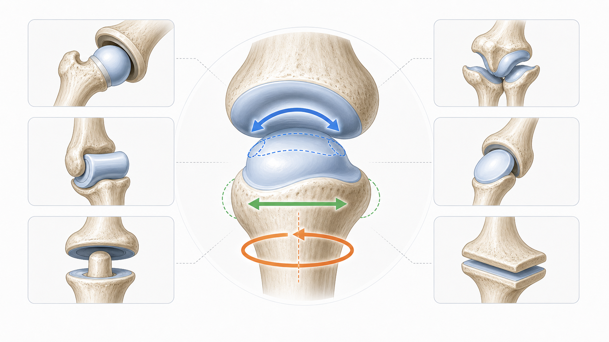

Day 18 · 脊柱与核心生物力学

脊柱稳定不是把腰锁死，而是让中立脊柱、腹内压、骨盆控制和负重路径一起工作。硬拉、深蹲、划船先看腰椎是否在可控区间，再看髋关节是否承担主动作。
核心判断：腰椎骨盆节律看腰椎屈伸和骨盆旋转是否协调；负重屈曲会提高椎间盘压力；腰带只是帮助撑出腹内压，不会自动修正圆背。
打开 Day18 原学习页 →目标：把早上中立脊柱、腹内压、腰椎骨盆节律压缩成可回忆框架，同时回拉 Day17、Day15、Day11、Day04。今天不推进进度，只复习。
脊柱稳定不是把腰锁死，而是让中立脊柱、腹内压、骨盆控制和负重路径一起工作。硬拉、深蹲、划船先看腰椎是否在可控区间，再看髋关节是否承担主动作。
核心判断：腰椎骨盆节律看腰椎屈伸和骨盆旋转是否协调；负重屈曲会提高椎间盘压力；腰带只是帮助撑出腹内压，不会自动修正圆背。
打开 Day18 原学习页 →



今日新知识 Day 18：中立脊柱是不是完全笔直？训练中更准确的判断是什么？
今日新知识 Day 18：为什么硬拉要维持中立脊柱，而不是圆背硬拉？
今日新知识 Day 18：腹内压和举重腰带分别起什么作用？
今日新知识 Day 18：腰椎骨盆节律在髋铰链里怎么体现？
Day 17：七大基本动作模式是什么？开放链和闭合链怎么区分？
Day 17 场景题：动作分析为什么不能直接背肌肉名？
Day 15：为什么硬拉时杠铃离身体越远，腰越吃力？
Day 15：力为什么是矢量？训练分析里看方向有什么用？
Day 11：卧推和划船的主要上肢肌群分别怎么归类？
Day 11：三角肌前束、中束、后束分别偏向哪些肩关节动作？
Day 4：关节运动学三要素是什么？凹凸法则怎么记？
Day 4 场景题：为什么髋关节和膝关节动作范围、训练限制不同？
| 易错点 | 错因 | 修正句 |
|---|---|---|
| 把中立脊柱理解成完全笔直 | 忽略脊柱天然生理曲度。 | 中立是保留自然曲度的安全区间，不是直尺。 |
| 把腰带当护身符 | 只看装备，没看腹压和动作技术。 | 腰带帮助撑腹压，但不会自动修正圆背和杠铃离身。 |
| 硬拉圆背仍继续加重量 | 把意志力和组织承压混在一起。 | 明显圆背、速度大降、腹压掉时，应降重或停组。 |
| 核心训练只做卷腹 | 只看腹肌燃烧感，没看稳定任务。 | 核心还要练抗伸展、抗屈曲、抗旋转、抗侧屈。 |
| 动作分析跳过力线 | 只记肌肉名称，不看外力方向。 | 先看阻力线和力臂，再判断哪里承担力矩。 |